Префектура Айти · Нагоя · сакэ
«Кухэйдзи»: сакэ из Нагои, которое учится у бургундского вина
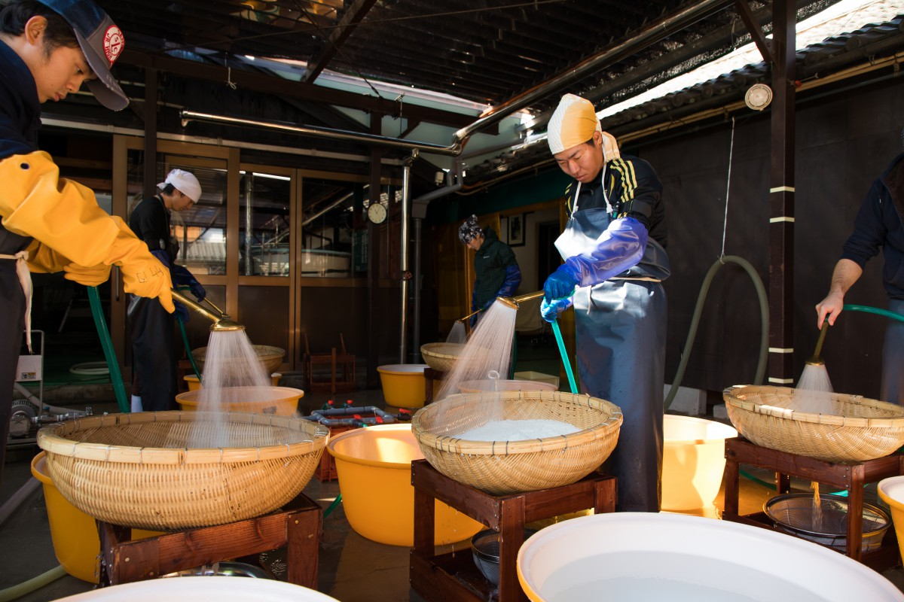
Сакэварня Бандзё дзёдзо работает в Нагое с 1647 года, а её сакэ «Кухэйдзи» знают далеко за пределами Японии. Её глава пришёл к простой мысли: о сакэ нельзя говорить, не зная рисового поля. К 2019 году у дома были свои поля в Японии, рис во Франции и винодельня в Бургундии.
Дом
Сакэварня с 1647 года
Утро в сакэварне начинается с пара. Двое мастеров огромными деревянными лопатками выбирают рис из косики, кедрового чана для варки на пару. Зёрна блестят и кажутся полупрозрачными, а в сладкий запах риса вплетается свежий аромат кедра, и кажется, будто воздух во всём здании становится чище.
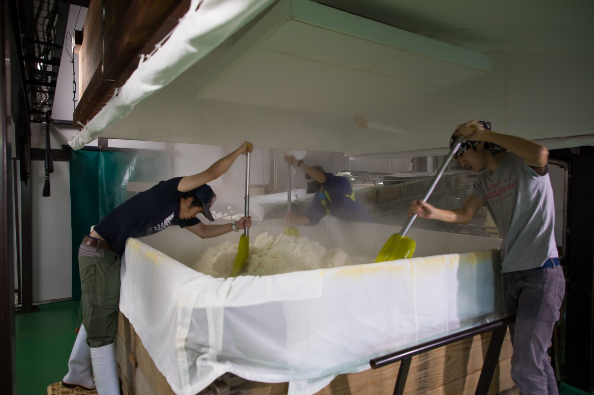
«Когда я принял дело, здесь всё было в машинах, и чан для риса был не деревянный. Но в старом кедровом косики рис не раскисает, а получается пышным насквозь»
Кухэйдзи Куно
Кухэйдзи Куно возглавляет Бандзё дзёдзо в пятнадцатом поколении. Сакэварня стоит в Одаке, старом квартале на юге Нагои, и работает здесь с эпохи Эдо. В здании, прибранном до последнего угла, трудно представить, что когда-то оно было заставлено машинами.
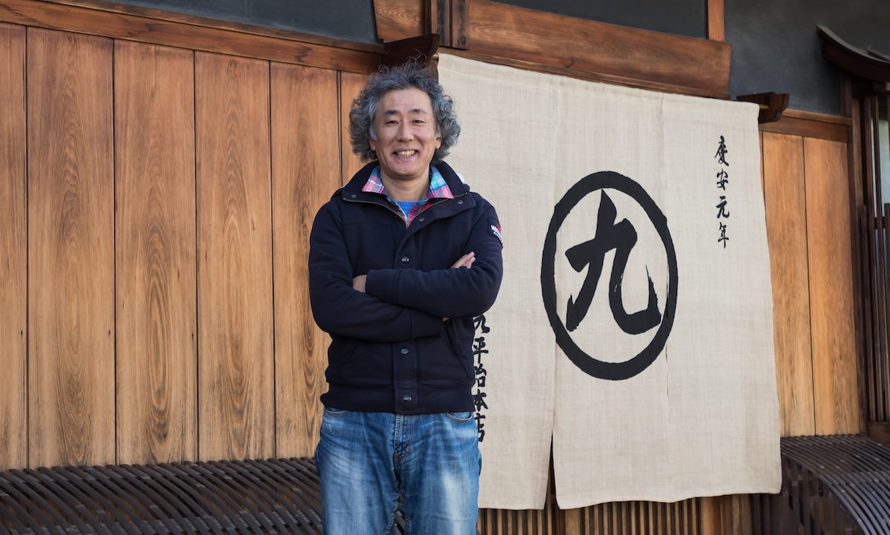
По словам Куно, пик потребления сакэ в Японии пришёлся на 1980-е годы, а к 2019 году оно упало примерно до трети от того уровня, меньше десятой части всего выпитого алкоголя. Причину он видит в самих производителях: годами они делали дешёвое сакэ машинным способом, не слушая ни покупателей, ни «дыхания риса».
Бандзё дзёдзо решила отказаться от этой «продукции эпохи Сёва» и вернуться к ручному труду, почти фермерскому. Так в 1997 году появилось сакэ «Камоси-бито Кухэйдзи», а в 2002 году дом стал делать только гиндзё и дайгиндзё, сакэ из сильно шлифованного риса.
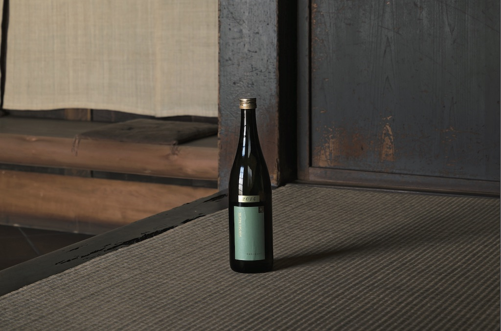
Поворот
Похвала из Парижа
«Тогда мне и захотелось, чтобы на сакэ снова обратили внимание люди, которые живут в XXI веке», вспоминает Куно. Ответ пришёл неожиданно. По случаю он привёз своё сакэ на мероприятие в парижском отеле, и один француз сказал ему: «У вашего сакэ вкус ручной работы. В конце концов и вино выбирают именно такое».
«Для меня это была высшая похвала. Вино и сакэ разные напитки, но если сакэ пьют с таким чувством, его примут и во Франции. А оттуда, с новым рынком, можно вернуть Японии понимание того, чего стоит сакэ»
Кухэйдзи Куно
Из этой мысли выросло новое дело «Кухэйдзи»: выращивать рис самим.
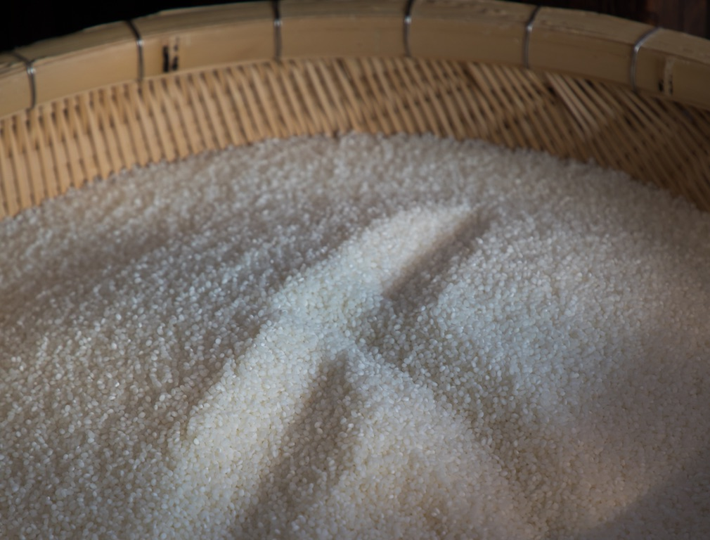
Поле
Рис из Куродасё
Куно продавал сакэ французским ресторанам, винным лавкам и отелям Парижа и заметил главное. У вина есть понятие «великий винтаж»: всех волнует, каким выдался урожай винограда. Вино делают, глядя на то, как растёт ягода. Сакэ тоже напиток брожения, только из риса, и без знания рисового поля доверия у тех, кто пьёт, не заслужить.
«Бургундия вывозит вина примерно на триллион иен в год, Япония вывозит сакэ примерно на 15 миллиардов. Чтобы закрыть эту разницу, мастерам сакэ нужно, как виноделам, говорить с людьми прямо с поля»
Кухэйдзи Куно
В 2010 году «Кухэйдзи» начала выращивать рис для сакэ своими руками в Куродасё, сельском районе города Нисиваки в префектуре Хёго. Раньше рис растил фермер, а сакэварня его покупала, и между ними всегда оставался какой-то зазор. Чтобы его закрыть, дом взялся за поле сам, с помощью местных фермеров и сельского кооператива.
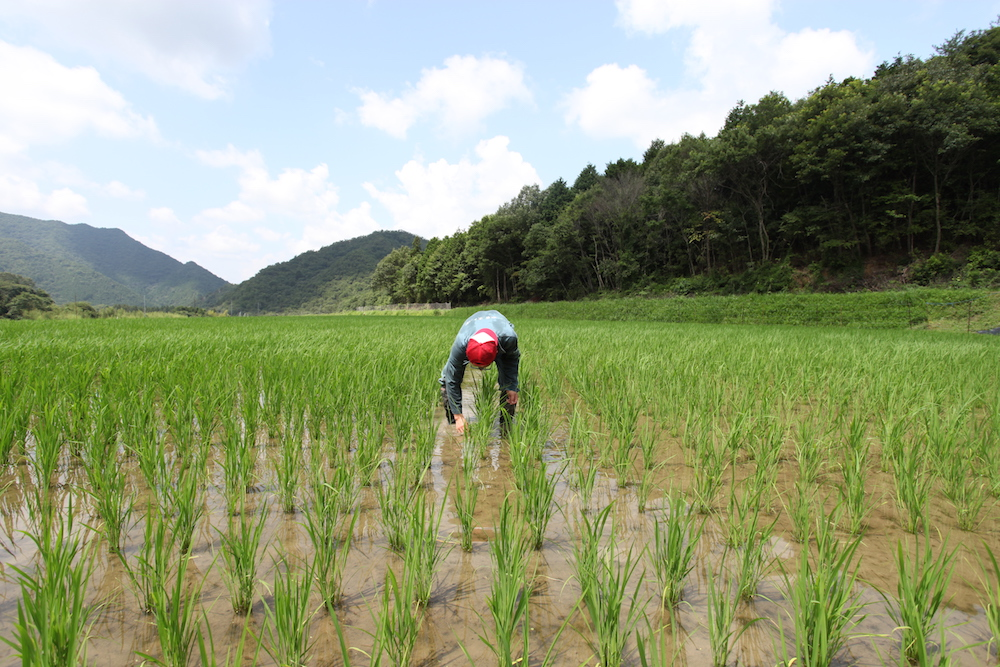
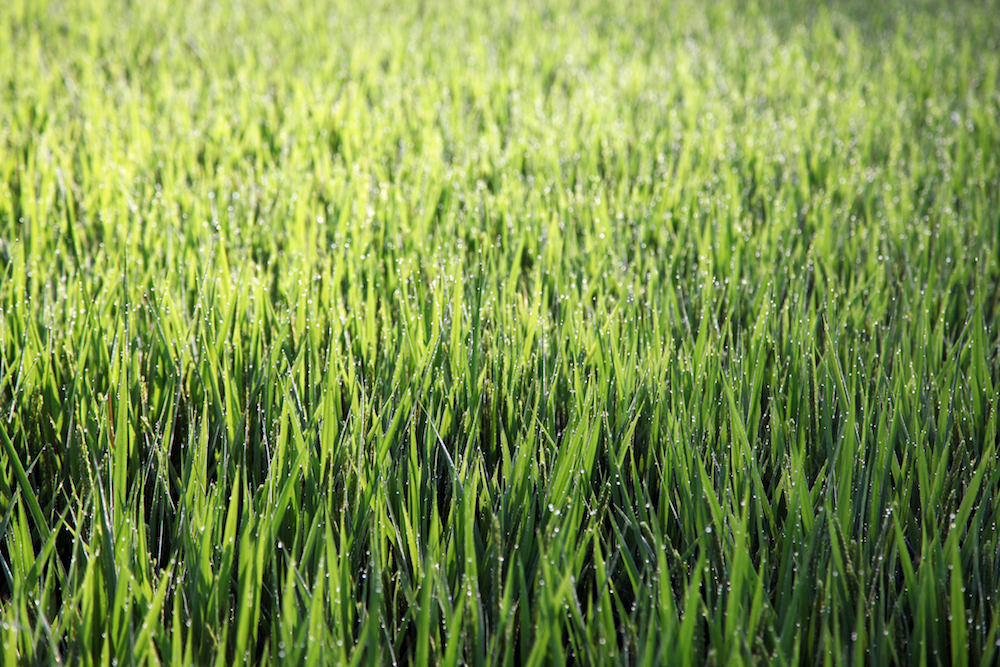
В 2011 году вышло первое сакэ только из своего риса, «Курода-сё ни умарэтэ» («Рождённое в Куродасё»). В 2013 году дому предложили взять поля в этом районе, а на следующий год он основал сельскохозяйственную компанию. В 2019 году у неё было около гектара своих полей, где растёт рис для сакэ «Ямада-нисики».
«2010 год выдался жарким. Если после цветения две недели держится больше 28 градусов, рис не вызревает, поэтому сакэ того года получилось стройным, худощавым. А 2014 год был идеальным, зерно налилось полностью, и сакэ винтажа 2014 года вышло пышным, с долгим послевкусием»
Кухэйдзи Куно
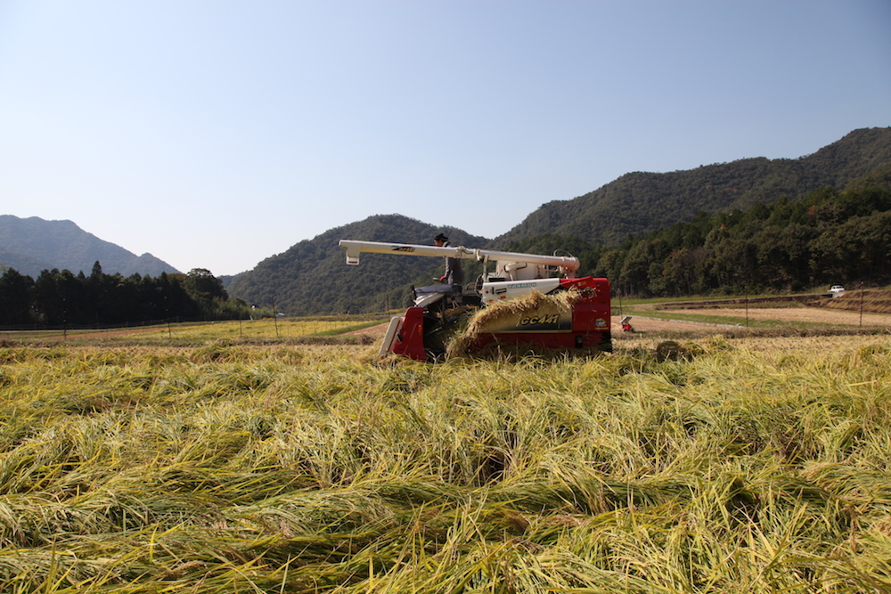
Выращивая рис сами, мастера учатся чувствовать то, что можно понять только на поле: винтаж и терруар. Рассказывать гостям эту «драму рисового поля» Куно считает новой задачей сакэварни. Хозяйство, которое само растит сырьё, делает напиток и разливает его по бутылкам, во Франции называют «домэн», и «Кухэйдзи» одной из первых стала таким домэном в мире сакэ.
Франция
Вино в Бургундии и рис в Камарге
«Что ускоряет развитие? Смешение культур»
Кухэйдзи Куно
Чтобы лучше понять суть своего ремесла, «Кухэйдзи» работает и во Франции. Первое направление это вино в Бургундии, от винограда до бутылки. В сентябре 2013 года Куно отправил одного из сотрудников на долгую стажировку в Бургундию, уже тогда думая о собственном вине. По его замыслу, японский мастер сакэ, вжившись во французское виноделие, принесёт в него японское чутьё, а с этим новым чутьём и сакэ ждёт химическая перемена.
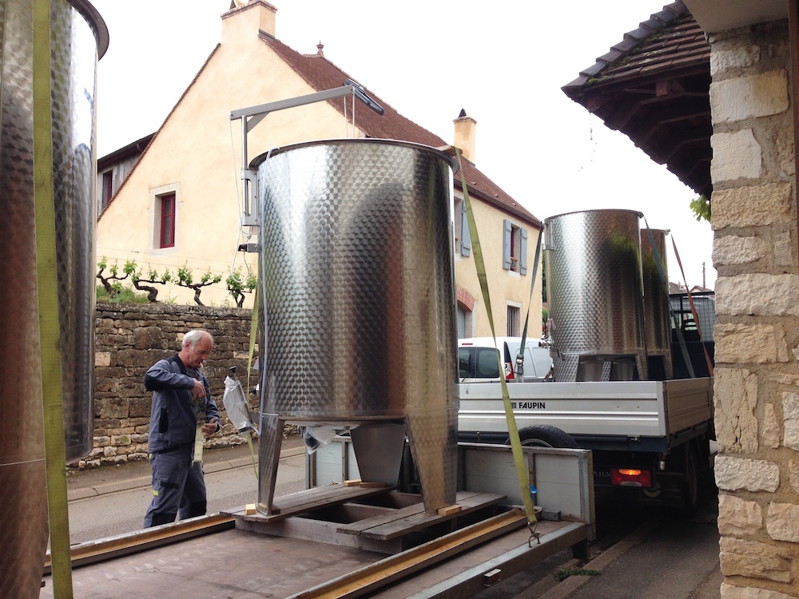
В 2015 году дом купил винодельню в деревне Море-Сен-Дени. Сначала он работал как негоциант, то есть покупал у фермеров виноград и вино, а выдерживал и разливал сам, и в 2016 году сделал первое пробное вино. В июле 2017 года дом приобрёл 2,5 гектара виноградников вокруг деревни и начал собирать и перерабатывать свой виноград.
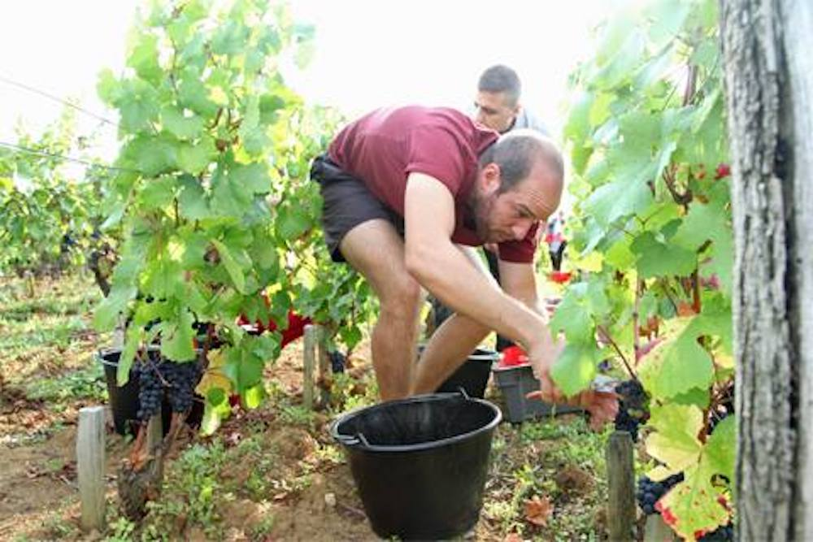
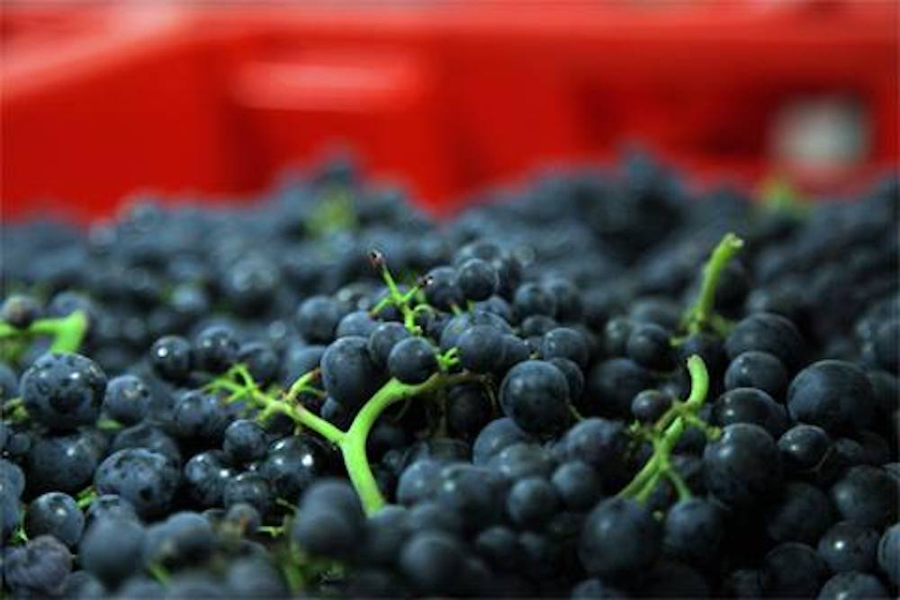
«Мы дошли до первого винтажа, и это трогает. Когда я делал „Камоси-бито Кухэйдзи“, многое подсказывало мне вино. Я верю, что за бургундским вином ждёт новое будущее и вина, и сакэ: это ведь напитки одной природы»
Кухэйдзи Куно
Второе направление это рис во Франции и сакэ из него. С 2014 года вместе с местными фермерами и сельскохозяйственной опытной станцией дом выращивает рис в Камарге, главной рисовой области Франции, на юге Прованса. Раньше здесь растили в основном рис для ризотто, а для сакэ выбрали французский сорт «Маноби», самый близкий к японскому рису для сакэ. Урожай везут в Японию, и из него делают сакэ «Камоси-бито Кухэйдзи CAMARGUE ни умарэтэ» («Рождённое в Камарге»).
Мастерская
Три цели «Кухэйдзи»
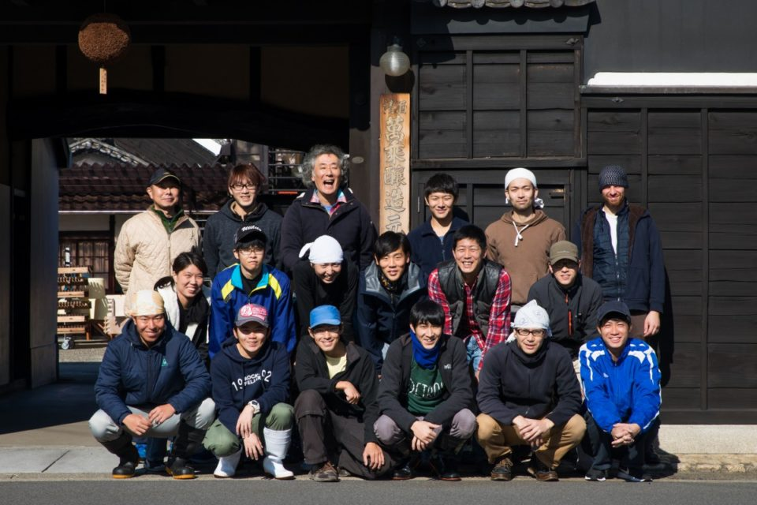
Выбирать сакэ по рису
Вкус вина зависит от сорта винограда и терруара. Так же и вкус сакэ зависит от сорта риса и места, где он вырос.
«До сих пор в сакэ главным героем была сакэварня. Скоро сакэ будут выбирать по винтажу риса, по терруару и по сорту»
Кухэйдзи Куно
«Кухэйдзи» работает с двумя сортами позднего риса для сакэ: «Ямада-нисики» и «Омати». Каждое сакэ дом делает только из одного сорта. «Хочется, чтобы люди почувствовали сорт. Найдите свой любимый», говорит Куно.
Вернуться к ручному труду
Сакэ здесь варят каждый год с ноября по май, и все 30 сотрудников работают в цеху как мастера. Ни одного человека, который занимался бы только бумагами или продажами, в доме нет: после отказа от «продукции эпохи Сёва» рук понадобилось много.
Машины не используют ни для пропаривания риса в кедровом чане, ни для приготовления кодзи, ни для переноса массы в бродильные чаны. Чаны берут небольшие, на одну тонну, чтобы за каждым можно было уследить, а перемешивают сусло как можно реже, доверяя силе дрожжей. Свой подход Куно называет «учиться у предков и смотреть на это глазами сегодняшнего дня».
Молодые мастера
Средний возраст команды 28 лет, и для стареющего мира сакэ это поразительно мало.
«Смена поколений тех, кто делает сакэ, тоже важна, чтобы убрать стену между вином и сакэ и делать сакэ, которое выиграет на мировом рынке»
Кухэйдзи Куно
Бандзё дзёдзо
- Адрес
- префектура Айти, Нагоя, район Мидори, Одака-тё, Нисимонда, 41
- Телефон
- +81 52-621-2185 (понедельник–пятница, 9:00–17:00)
- Сайт
- kuheiji.co.jp
Фото: Садаясу Найто.